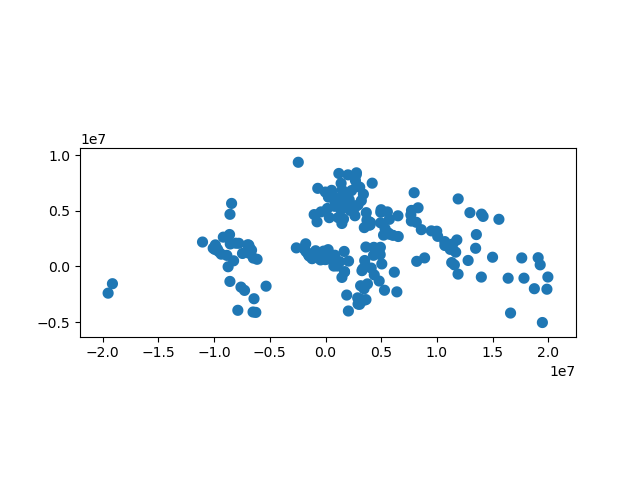
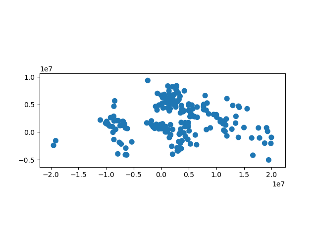

Set-Operations with Overlay¶
When working with multiple spatial datasets – especially multiple polygon or
line datasets – users often wish to create new shapes based on places where
those datasets overlap (or don’t overlap). These manipulations are often
referred using the language of sets – intersections, unions, and differences.
These types of operations are made available in the geopandas library through
the overlay function.
The basic idea is demonstrated by the graphic below but keep in mind that overlays operate at the DataFrame level, not on individual geometries, and the properties from both are retained. In effect, for every shape in the first GeoDataFrame, this operation is executed against every other shape in the other GeoDataFrame:

Source: QGIS Documentation
(Note to users familiar with the shapely library: overlay can be thought
of as offering versions of the standard shapely set-operations that deal with
the complexities of applying set operations to two GeoSeries. The standard
shapely set-operations are also available as GeoSeries methods.)
The different Overlay operations¶
First, we create some example data:
In [1]: from shapely.geometry import Polygon
In [2]: polys1 = geopandas.GeoSeries([Polygon([(0,0), (2,0), (2,2), (0,2)]),
...: Polygon([(2,2), (4,2), (4,4), (2,4)])])
...:
In [3]: polys2 = geopandas.GeoSeries([Polygon([(1,1), (3,1), (3,3), (1,3)]),
...: Polygon([(3,3), (5,3), (5,5), (3,5)])])
...:
In [4]: df1 = geopandas.GeoDataFrame({'geometry': polys1, 'df1':[1,2]})
In [5]: df2 = geopandas.GeoDataFrame({'geometry': polys2, 'df2':[1,2]})
These two GeoDataFrames have some overlapping areas:
In [6]: ax = df1.plot(color='red');
In [7]: df2.plot(ax=ax, color='green', alpha=0.5);

We illustrate the different overlay modes with the above example.
The overlay function will determine the set of all individual geometries
from overlaying the two input GeoDataFrames. This result covers the area covered
by the two input GeoDataFrames, and also preserves all unique regions defined by
the combined boundaries of the two GeoDataFrames.
When using how='union', all those possible geometries are returned:
In [8]: res_union = geopandas.overlay(df1, df2, how='union')
In [9]: res_union
Out[9]:
df1 df2 geometry
0 1.0 1.0 POLYGON ((1.000000000 2.000000000, 2.000000000...
1 2.0 1.0 POLYGON ((2.000000000 2.000000000, 2.000000000...
2 2.0 2.0 POLYGON ((3.000000000 4.000000000, 4.000000000...
3 1.0 NaN POLYGON ((0.000000000 0.000000000, 0.000000000...
4 2.0 NaN MULTIPOLYGON (((2.000000000 3.000000000, 2.000...
5 NaN 1.0 MULTIPOLYGON (((1.000000000 2.000000000, 1.000...
6 NaN 2.0 POLYGON ((3.000000000 4.000000000, 3.000000000...
In [10]: ax = res_union.plot(alpha=0.5, cmap='tab10')
In [11]: df1.plot(ax=ax, facecolor='none', edgecolor='k');
In [12]: df2.plot(ax=ax, facecolor='none', edgecolor='k');

The other how operations will return different subsets of those geometries.
With how='intersection', it returns only those geometries that are contained
by both GeoDataFrames:
In [13]: res_intersection = geopandas.overlay(df1, df2, how='intersection')
In [14]: res_intersection
Out[14]:
df1 df2 geometry
0 1 1 POLYGON ((1.000000000 2.000000000, 2.000000000...
1 2 1 POLYGON ((2.000000000 2.000000000, 2.000000000...
2 2 2 POLYGON ((3.000000000 4.000000000, 4.000000000...
In [15]: ax = res_intersection.plot(cmap='tab10')
In [16]: df1.plot(ax=ax, facecolor='none', edgecolor='k');
In [17]: df2.plot(ax=ax, facecolor='none', edgecolor='k');
{kind=link}
how='symmetric_difference' is the opposite of 'intersection' and returns
the geometries that are only part of one of the GeoDataFrames but not of both:
In [18]: res_symdiff = geopandas.overlay(df1, df2, how='symmetric_difference')
In [19]: res_symdiff
Out[19]:
df1 df2 geometry
0 1.0 NaN POLYGON ((0.000000000 0.000000000, 0.000000000...
1 2.0 NaN MULTIPOLYGON (((2.000000000 3.000000000, 2.000...
2 NaN 1.0 MULTIPOLYGON (((1.000000000 2.000000000, 1.000...
3 NaN 2.0 POLYGON ((3.000000000 4.000000000, 3.000000000...
In [20]: ax = res_symdiff.plot(cmap='tab10')
In [21]: df1.plot(ax=ax, facecolor='none', edgecolor='k');
In [22]: df2.plot(ax=ax, facecolor='none', edgecolor='k');
{kind=link}
To obtain the geometries that are part of df1 but are not contained in
df2, you can use how='difference':
In [23]: res_difference = geopandas.overlay(df1, df2, how='difference')
In [24]: res_difference
Out[24]:
geometry df1
0 POLYGON ((0.000000000 0.000000000, 0.000000000... 1
1 MULTIPOLYGON (((2.000000000 3.000000000, 2.000... 2
In [25]: ax = res_difference.plot(cmap='tab10')
In [26]: df1.plot(ax=ax, facecolor='none', edgecolor='k');
In [27]: df2.plot(ax=ax, facecolor='none', edgecolor='k');

Finally, with how='identity', the result consists of the surface of df1,
but with the geometries obtained from overlaying df1 with df2:
In [28]: res_identity = geopandas.overlay(df1, df2, how='identity')
In [29]: res_identity
Out[29]:
df1 df2 geometry
0 1.0 1.0 POLYGON ((1.000000000 2.000000000, 2.000000000...
1 2.0 1.0 POLYGON ((2.000000000 2.000000000, 2.000000000...
2 2.0 2.0 POLYGON ((3.000000000 4.000000000, 4.000000000...
3 1.0 NaN POLYGON ((0.000000000 0.000000000, 0.000000000...
4 2.0 NaN MULTIPOLYGON (((2.000000000 3.000000000, 2.000...
In [30]: ax = res_identity.plot(cmap='tab10')
In [31]: df1.plot(ax=ax, facecolor='none', edgecolor='k');
In [32]: df2.plot(ax=ax, facecolor='none', edgecolor='k');
{kind=link}
Overlay Countries Example¶
First, we load the countries and cities example datasets and select :
In [33]: world = geopandas.read_file(geopandas.datasets.get_path('naturalearth_lowres'))
In [34]: capitals = geopandas.read_file(geopandas.datasets.get_path('naturalearth_cities'))
# Select South Amarica and some columns
In [35]: countries = world[world['continent'] == "South America"]
In [36]: countries = countries[['geometry', 'name']]
# Project to crs that uses meters as distance measure
In [37]: countries = countries.to_crs('+init=epsg:3395')
In [38]: capitals = capitals.to_crs('+init=epsg:3395')
To illustrate the overlay function, consider the following case in which one
wishes to identify the “core” portion of each country – defined as areas within
500km of a capital – using a GeoDataFrame of countries and a
GeoDataFrame of capitals.
# Look at countries:
In [39]: countries.plot();
# Now buffer cities to find area within 500km.
# Check CRS -- World Mercator, units of meters.
In [40]: capitals.crs
Out[40]: '+init=epsg:3395'
# make 500km buffer
In [41]: capitals['geometry']= capitals.buffer(500000)
In [42]: capitals.plot();
 

{kind=link}
To select only the portion of countries within 500km of a capital, we specify the how option to be “intersect”, which creates a new set of polygons where these two layers overlap:
In [43]: country_cores = geopandas.overlay(countries, capitals, how='intersection')
In [44]: country_cores.plot(alpha=0.5, edgecolor='k', cmap='tab10');
{kind=link}
Changing the “how” option allows for different types of overlay operations. For example, if we were interested in the portions of countries far from capitals (the peripheries), we would compute the difference of the two.
In [45]: country_peripheries = geopandas.overlay(countries, capitals, how='difference')
In [46]: country_peripheries.plot(alpha=0.5, edgecolor='k', cmap='tab10');